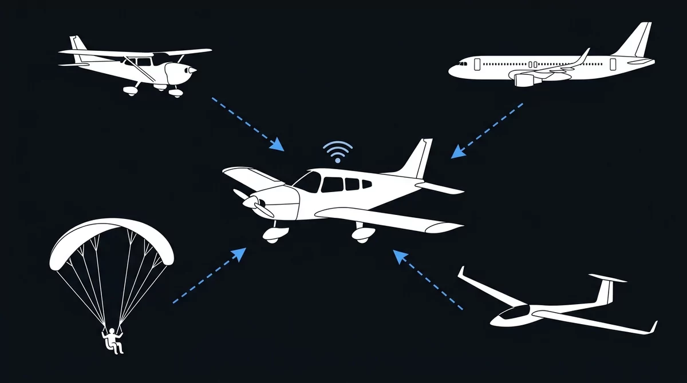
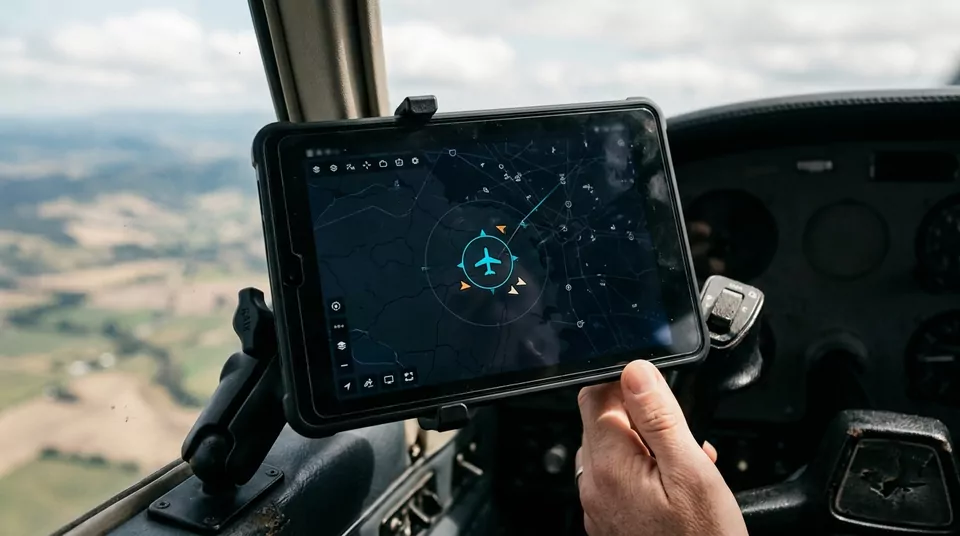

Portable traffic receiver
See what's out there.
KestrelOne picks up the aircraft around you and puts them on the moving map you already fly with.
- SkyDemon & ForeFlight
- ADS-B and PilotAware
- 10+ hour battery
What it hears
Two receivers, listening at once.
1090 MHz for transponders and ADS-B, and 868 MHz for PilotAware and the low-power networks flown by gliders and paragliders.

On your map today
- ADS-B Position, altitude, callsign and climb rate from transponder-equipped aircraft, on 1090 MHz
- PilotAware The P3I network on 869.5 MHz, widely flown in UK GA
Heard, not plotted
- Mode S Transponders without ADS-B. Their replies carry no position, so they cannot be placed on a map
In development
- OGN Gliders, tugs and the Open Glider Network
- FANET Paragliders and hang gliders
- ADS-L The open EASA-backed standard
KestrelOne is a receiver, so it works alongside your transponder rather than replacing it — that is still what makes you visible to others. It shows what it can hear, which is never quite everything, so it belongs beside a good lookout rather than instead of one.
What you get
Built for the cockpit you already have.
No installation, no wiring, no subscription.

Straight to your EFB
Traffic goes out as standard GDL90 over WiFi, the format SkyDemon, ForeFlight and other flight apps take from a traffic receiver. The targets appear on the map you were flying with anyway.
Knows where you are
A multi-constellation receiver fixes your position from GPS, GLONASS and Galileo together, and a barometer reads your pressure altitude. Nearby traffic is shown as height above or below you rather than as a number to work out.
Grab it and go
Runs for 10 hours and more on its own battery, and charges over USB-C. Nothing wired into the aircraft, nothing to certify, and it moves between aircraft as easily as your headset.
Set up
Flying in three steps.
Nothing to install on the tablet beyond the app you already use.
- Switch it on Charge it over USB-C and switch it on. A view of the sky helps it find your position.
-
Join its WiFi
On your tablet, join the
KestrelOnenetwork. The password iskestrelone. - Start flying In SkyDemon, choose GDL90 Compatible Device when you start Flying mode. Other GDL90 apps listen on UDP port 4000; look in their external-device settings.
While you are on its network, the device's own page is at 192.168.4.1: live traffic, signal quality, battery and settings.
Firmware
Latest …
Updates install from your browser over USB and keep your settings.
Specifications
| Traffic reception | 1090 MHz ADS-B and Mode S — extended squitter, all-call and surveillance replies. 869.5 MHz PilotAware (P3I). |
|---|---|
| In development | OGN, FANET and ADS-L, on the same 868 MHz receiver |
| Transmission | None. Receive only. |
| Position | Multi-constellation GNSS — GPS, GLONASS and Galileo |
| Altitude | Barometric pressure altitude, 25 ft resolution |
| Output | GDL90 over WiFi (UDP 4000) — ownship, traffic and heartbeat. Works with SkyDemon and ForeFlight. |
| Network | Hosts its own access point (KestrelOne, password kestrelone), or joins an existing network |
| Power | Internal lithium cell, 10+ hours under load in testing. USB-C charging, battery gauge. |
| Interface | Built-in web page for traffic, signal quality and settings (192.168.4.1 on its own network) |
| Updates | From this site, in the browser, over USB |